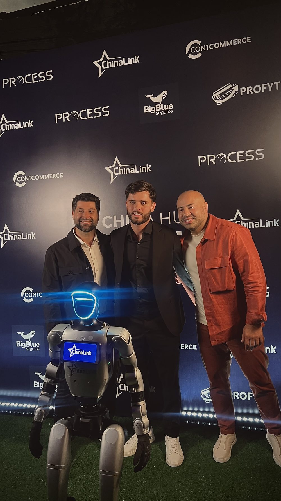

Agentes de IA que trabalham sozinhos: como montar uma operação que roda 24 horas
Agente que “trabalha sozinho” não é agente sem regras. É agente com gatilho, ferramentas, limites e alguém olhando os números. Aqui está a estrutura que faz a operação rodar de madrugada sem virar risco.

Uma operação de agentes de IA que roda 24 horas é composta por cinco peças: um gatilho que acorda o agente, uma instrução clara, ferramentas conectadas aos sistemas da empresa, limites com transferência para humano e monitoramento contínuo. Sem qualquer uma delas, o agente até responde, mas não opera sozinho com segurança. Com as cinco, ele atende, qualifica e agenda de madrugada, no feriado e no pico, e a equipe só entra onde faz diferença.
Eu opero esse tipo de estrutura todos os dias. Vou direto ao que importa: o que significa “sozinho” de verdade, como montar cada peça e onde ainda precisa de gente.
- “Sozinho” quer dizer sem humano em cada passo, não sem supervisão.
- As 5 peças: gatilho, instrução, ferramentas, limites e monitoramento.
- Comece por um processo com volume alto e regra clara.
- O agente precisa saber quando parar e chamar uma pessoa.
O que significa um agente de IA trabalhar sozinho?
Significa que ele recebe um estímulo (uma mensagem, um pedido, um horário), decide o que fazer dentro de regras definidas e executa a ação sem esperar aprovação humana a cada etapa. Não significa autonomia irrestrita. O agente que atende no WhatsApp às 3 da manhã tem o mesmo roteiro, os mesmos limites e a mesma base de conhecimento do que atende às 3 da tarde.
A diferença para a automação tradicional é que o agente lida com linguagem natural e imprevisto. Se quiser entender essa fronteira, veja chatbot, automação ou agente de IA.
Quais são as 5 peças de uma operação de IA que roda 24 horas?
| Peça | O que é | O que acontece se faltar |
|---|---|---|
| Gatilho | Mensagem recebida, formulário, carrinho abandonado, horário marcado | O agente fica parado ou depende de alguém para iniciar |
| Instrução | Papel, tom, regras e passo a passo do processo | Respostas inconsistentes e fora do padrão da marca |
| Ferramentas | Integração com WhatsApp, CRM, agenda, catálogo, ERP | Ele conversa, mas não resolve nada |
| Limites e handoff | O que pode fazer sozinho e quando passa para humano | Promessas indevidas, alucinação, cliente irritado sem saída |
| Monitoramento | Logs, métricas, alertas e revisão de conversas | Erro silencioso que se repete por semanas |
A anatomia completa de cada uma está em anatomia de um agente de IA. Aqui o foco é como elas se encaixam numa operação contínua.
Como montar uma operação de agentes de IA, passo a passo?
- Escolha um processo com volume e regra clara. Primeiro contato com lead, agendamento, status de pedido, recuperação de carrinho. Processo que depende de julgamento delicado fica para depois.
- Documente como um humano faz hoje. Perguntas que faz, critérios de decisão, exceções, quando escala. O agente só é tão bom quanto esse mapa.
- Escreva a instrução e carregue o conhecimento. Preços, políticas e catálogo entram numa base consultável. Veja como escrever o prompt de um agente.
- Conecte as ferramentas. Sem acesso à agenda e ao CRM, o agente só conversa. As opções estão em integrações de agentes de IA.
- Defina limites e handoff. Liste o que ele nunca faz (dar desconto fora da tabela, prometer prazo, opinar sobre saúde ou direito) e os gatilhos de transferência. Detalhes em handoff humano em agentes de IA.
- Teste com conversas reais antes de ligar. Use histórico verdadeiro de atendimento, não só cenários felizes. O roteiro está em como testar um agente antes de produção.
- Ligue, monitore e ajuste. A primeira semana é de revisão diária de conversas. Depois, semanal.
Operação 24 horas não nasce de um agente genial. Nasce de um processo bem documentado, limites claros e alguém que lê as conversas toda semana.
Um agente de IA realmente atende e vende sem humano? Um caso real
A Friday, agente de IA criada por mim, atendeu 341 empresários no WhatsApp, agendou 41 consultorias sem nenhum humano e gerou 19 contratos. Ela conversa, entende a situação de cada empresário, qualifica e marca a consultoria direto na agenda. Nenhuma pessoa precisa estar online para isso acontecer.
Esse resultado vem de um processo estreito e bem definido (qualificar e agendar), não de um agente “que faz tudo”. Num estudo próprio com 88 empresários que conversaram com a Friday depois de uma palestra, 49% disseram que o maior gargalo é gerar clientes e 76% querem resolver agora. Quem tem esse problema não pode esperar o horário comercial para ser atendido.
Quantos agentes uma operação precisa?
Começa com um. Quando o primeiro estabiliza, a tendência é dividir responsabilidades: um agente para atendimento, outro para recuperação de vendas, outro para pós-venda e outro para tarefas internas. Criei mais de 50 agentes de IA autônomos que rodam nas operações das minhas empresas, e a regra que se repete é que agente com função única erra menos do que agente com dez funções. Quando há vários, entra o desafio de coordená-los, tema de orquestração de agentes de IA. Se quiser ver como isso fica na prática, conheça o Multiverso, onde eu organizo esses agentes.
O que nunca deixar um agente de IA decidir sozinho?
- Exceções financeiras: reembolso fora da política, desconto livre, renegociação.
- Temas regulados: orientação médica, jurídica ou fiscal. O agente informa o processo e encaminha para o profissional.
- Reclamação grave: cliente muito irritado ou ameaça de ação pede uma pessoa.
- Dados sensíveis sem base legal: trate com cuidado e confira as exigências da LGPD no artigo sobre segurança de dados em agentes de IA.
Mais casos estão em onde a IA não deve ser usada no seu negócio.
Como monitorar um agente que trabalha de madrugada?
Três camadas bastam para começar:
- Log de toda conversa, com a ação que o agente tomou em cada etapa.
- Métricas simples: volume, taxa de transferência para humano, agendamentos, tempo de resposta e conversas sem resolução.
- Alertas: falha de integração, pico de transferências, palavras de reclamação, fila parada.
O detalhamento está em observabilidade de agentes de IA. E antes de ligar qualquer coisa, vale conferir os erros mais caros ao implantar um agente.
Operação 24 horas com IA compensa financeiramente?
Compensa quando o agente cobre um processo de volume e o custo por conversa é menor que o custo do atendimento equivalente somado à venda que se perdia fora do horário. Faça a conta com custo por conversa e ROI do agente de IA, e não com a impressão de que “IA é barata”. Eu detalho a visão completa da empresa operada por agentes no livro “A Empresa que Trabalha Sozinha”.
Perguntas frequentes
Dá para uma empresa rodar 24 horas só com agentes de IA?
Dá para rodar 24 horas os processos repetitivos e bem definidos, como atendimento, qualificação, agendamento e follow-up. Decisões sensíveis, exceções e negociações complexas continuam com pessoas, e o agente precisa saber transferir a conversa nesses casos.
Um agente de IA trabalha sem nenhum humano supervisionando?
Ele executa sem um humano em cada passo, mas não sem supervisão. A operação precisa de logs, alertas e revisão periódica de conversas para detectar erros, ajustar a instrução e corrigir desvios antes que virem prejuízo.
Por onde começar uma operação com agentes de IA?
Comece por um processo com dor clara e volume alto, geralmente o atendimento ou o primeiro contato com o lead no WhatsApp. Documente o processo, defina os limites do agente, teste com conversas reais e só depois amplie para outros processos.
Quanto custa manter um agente de IA rodando o dia todo?
O custo depende do modelo de IA usado, do volume de conversas e das integrações. O cálculo correto é custo por conversa multiplicado pelo volume mensal, somado à manutenção, e comparado com o custo do atendimento humano equivalente e com a receita que o agente gera.
O que acontece quando o agente de IA não sabe responder?
Um agente bem configurado reconhece o limite, não inventa resposta e transfere a conversa para uma pessoa com o contexto já resumido. Esse handoff humano é uma das peças centrais de qualquer operação autônoma.

Fundador da Gene Company e diretor da LINCE Performance, parceiro do TikTok for Business. Lança marcas, monta lojas no TikTok Shop, faz tráfego pago para marcas, negócios locais e clínicas e cria agentes de IA de atendimento e recuperação de vendas. Santos/SP, atende todo o Brasil. Fale comigo no WhatsApp →